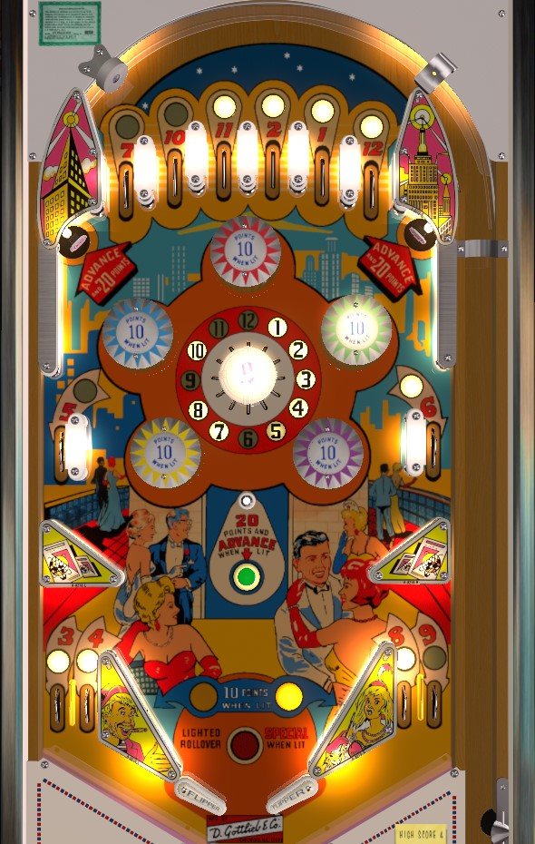

If playing for points, the best strategy is just to try to stay in the bumper area for as long as possible, taking advantage of the 10-point bumpers whenever they are lit. Points only come in 1s, 10s, or 20s in this game, so anything worth 10 is worth your time. The 20 point targets and when-lit rollover button are too inconsistent or dangerous to be a strategy. If playing for Specials, collecting all 12 numbers lights one of them randomly for Special, or score enough Advances from the top standup targets or lit center rollover button.
Each of the numbers 1 through 12 can be collected in two places around the table: a rollover lane, or the center "multi-bumper". Numbers score 10 points when lit, or 1 point when not lit. Collect a lit number to unlight it. The six top lanes give, from left to right, 7-10-11-2-1-12; I do know of at least one game setting that can tie the 11 and 2 together, so that collecting either one gives credit for both, but I am not aware of how many such pairs or settings there are. 5 and 6 are available at the left and right side lanes about halfway up the table. 3 and 4 are the left out lanes, and 8 and 9 are the right out lanes. Collecting all 12 numbers lights the red insert near the flippers reading "Lighted Rollover Special When Lit". At this point, one number will be lit at a time, pseudo-randomly changing on various switch hits, for the rest of the game. Collecting the lit number in this case scores an instant special.
The center table multi-bumper has 12 "prongs" corresponding to the 12 numbers. These prongs act as rollover switches, but have a considerable amount of tension on them. causing them to push the ball back directly away from the center bumper once the rollover switch is pressed in. These switches collect the 1-12 numbers just the same as the respective rollover lanes do.
The 5 and 6 are the hardest numbers to collect, due to their presence at the side lanes and the bottom part of the multi-bumper. Be very careful shooting up the table, as the large metal post just below the 6 on the multi-bumper loves to hand out center drains or out lane drains.
The five pop bumpers alternate between lit and not lit every time a switch in the game other than a 1-12 rollover is triggered. Lit bumpers score 10 points. Unlit bumpers score 1 point. At any given time, either all 5 bumpers are on, or all 5 bumpers are off. If the bumpers are on, the slingshots score 10 points instead of 1, and the center rollover button scores 20 points and an elevator advance instead of a single point. The pop bumpers will end up alternating between lit and not lit very frequently, and getting balls stuck in the bumper area and nudging to keep them there as long as possible is really the best way to score points.
The standup targets in the upper corners of the game score 20 points and an elevator advance. The center rollover button also scores 20 points and an elevator advance when lit. When an elevator advance is scored, an animation occurs in the backbox where the elevator doors open to reveal some party guests, and the floor of the elevator increases by one. Elevator advances are not inherently worth points in any way, but reaching certain numbers of elevator advances can score Specials.
There are no in lanes. The flippers back up directly to the slingshots. Slingshots score 1 point when not lit or 10 points when lit. Behind the slingshot on each side are two out lanes, which award the numbers 3, 4, 8, and 9 from left to right across the table.
There is no end of ball or end of game bonus, and no way to earn an extra ball. Tilt ends game.